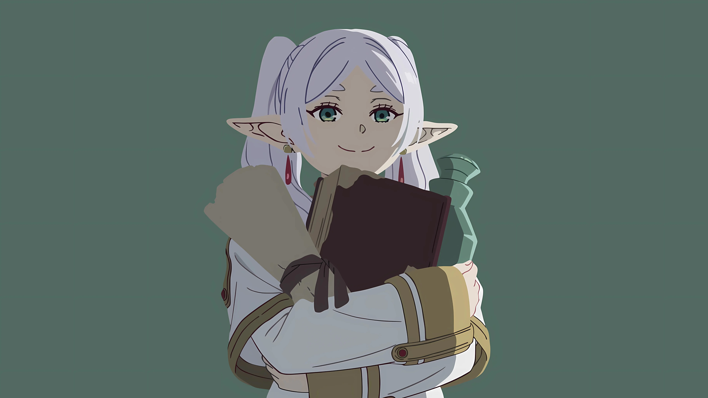
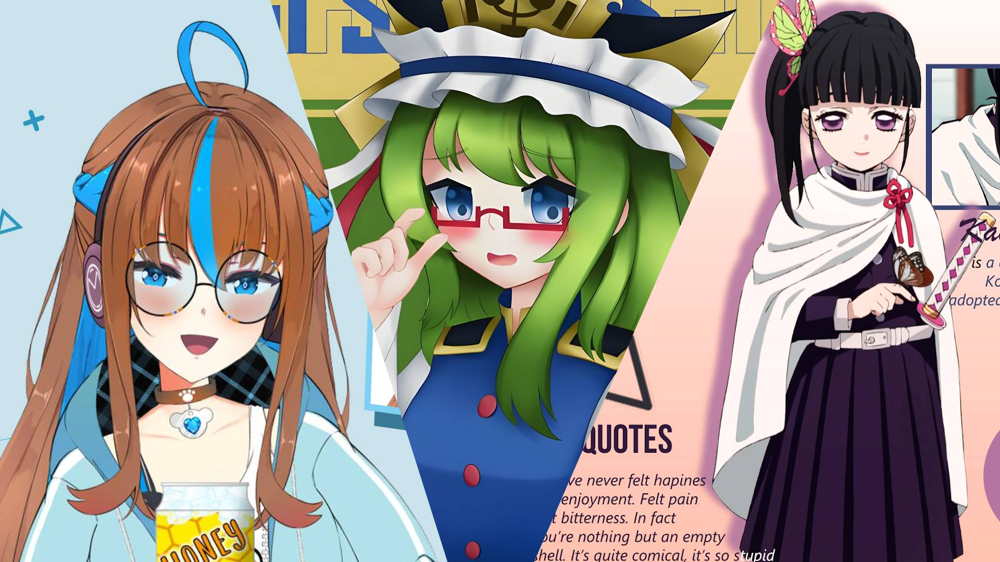
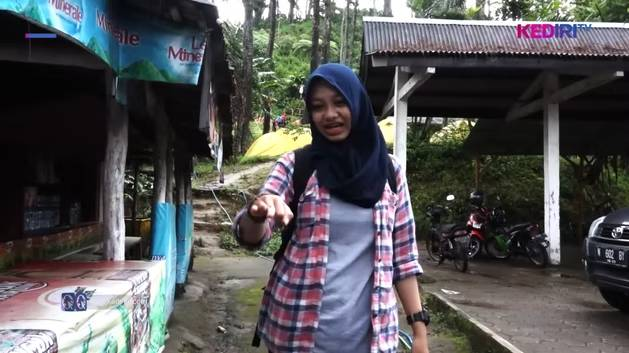
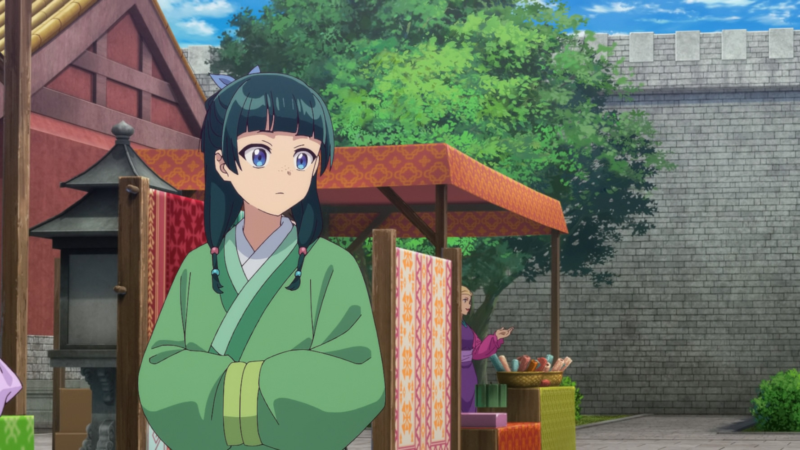

Proyek Saya
Kumpulan beberapa proyek pilihan yang pernah saya kerjakan.
Commission
Website portofolio yang ringan dan super cepat, dibangun menggunakan framework Astro dan terintegrasi i18n.
Custom Last.fm Web Player
Widget UI kustom yang mengambil data dan menampilkan lagu yang sedang diputar secara real-time via API.

Ilustrasi Karakter Digital
Eksplorasi rendering karakter dengan fokus pada detail pencahayaan dan penyelesaian tekstur rambut.

Design
Eksplorasi rendering karakter dengan fokus pada detail pencahayaan dan penyelesaian tekstur rambut.

Video
Eksplorasi rendering karakter dengan fokus pada detail pencahayaan dan penyelesaian tekstur rambut.

Localization
Melakukan proses pengecekan kualitas terjemahan (Translator Checker) dari bahasa Inggris ke Indonesia.